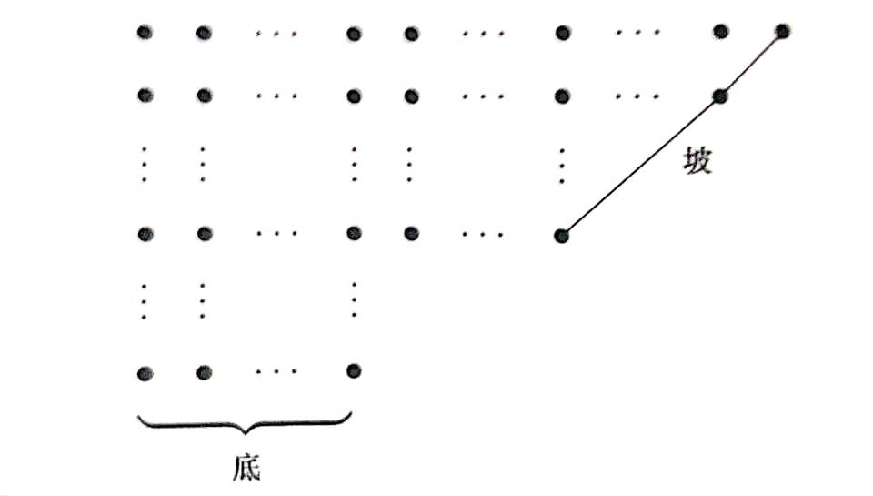

OI Wiki · prijevod · MatematikaOI Wiki · translation · Mathematics
Particijski brojeviPartition numbers
Sadržaj
Particija (rastav): zapis prirodnog broja \(n\) kao zbroja nerastućih pozitivnih cijelih brojeva.
Svaki pozitivan cijeli broj u tom zbroju naziva se dijelom.
Particijski broj: \(p_n\). Broj načina na koje se prirodan broj \(n\) može rastaviti.
Particijski brojevi počevši od \(0\):
| n | 0 | 1 | 2 | 3 | 4 | 5 | 6 | 7 | 8 |
|---|---|---|---|---|---|---|---|---|---|
| \(p_n\) | 1 | 1 | 2 | 3 | 5 | 7 | 11 | 15 | 22 |
Particije na k dijelova
Broj particija broja \(n\) na točno \(k\) dijelova nazivamo brojem particija na \(k\) dijelova i označavamo ga \(p(n,k)\).
Očito je broj particija na \(k\) dijelova \(p(n,k)\) ujedno i broj rješenja sljedeće jednadžbe:
Ako je u toj jednadžbi točno \(j\) dijelova različito od 0, postoji točno \(p(n-k,j)\) rješenja. Stoga vrijedi:
Oduzimanjem dviju susjednih suma dobivamo:
Prikažemo li to tablicom, broj u svakoj ćeliji jednak je zbroju broja gore lijevo i broja koji se nalazi onoliko ćelija iznad koliko iznosi indeks stupca.
| k | 0 | 1 | 2 | 3 | 4 | 5 | 6 | 7 | 8 |
|---|---|---|---|---|---|---|---|---|---|
| \(p(0,k)\) | 1 | 0 | 0 | 0 | 0 | 0 | 0 | 0 | 0 |
| \(p(1,k)\) | 0 | 1 | 0 | 0 | 0 | 0 | 0 | 0 | 0 |
| \(p(2,k)\) | 0 | 1 | 1 | 0 | 0 | 0 | 0 | 0 | 0 |
| \(p(3,k)\) | 0 | 1 | 1 | 1 | 0 | 0 | 0 | 0 | 0 |
| \(p(4,k)\) | 0 | 1 | 2 | 1 | 1 | 0 | 0 | 0 | 0 |
| \(p(5,k)\) | 0 | 1 | 2 | 2 | 1 | 1 | 0 | 0 | 0 |
| \(p(6,k)\) | 0 | 1 | 3 | 3 | 2 | 1 | 1 | 0 | 0 |
| \(p(7,k)\) | 0 | 1 | 3 | 4 | 3 | 2 | 1 | 1 | 0 |
| \(p(8,k)\) | 0 | 1 | 4 | 5 | 5 | 3 | 2 | 1 | 1 |
Primjer zadatka
Računanje broja particija na k dijelova
Izračunajte broj particija na \(k\) dijelova \(p(n,k)\). Više testnih primjera; \(n\) je najviše \(10000\), \(k\) najviše \(1000\), rezultat se računa modulo \(1000007\).
Promatrajući tablicu i rekurziju, ažuriranje po stupcima povoljnije je za pohranu. Program nije teško napisati:
#include <cstdio>
#include <cstring>
int p[10005][1005]; /*broj načina da se prirodan broj n rastavi na k dijelova*/
int main() {
int n, k;
while (~scanf("%d%d", &n, &k)) {
memset(p, 0, sizeof(p));
p[0][0] = 1;
int i;
for (i = 1; i <= n; ++i) {
int j;
for (j = 1; j <= k; ++j) {
if (i - j >= 0) /*p[i-j][j]: svi dijelovi veći od 1*/
{
p[i][j] = (p[i - j][j] + p[i - 1][j - 1]) %
1000007; /*p[i-1][j-1]: barem jedan dio jednak 1.*/
}
}
}
printf("%d\n", p[n][k]);
}
}
Funkcija izvodnica
Iz formule za zbroj geometrijskog niza imamo:
Za particije na \(k\) dijelova funkcija izvodnica malo je složenija. Konkretno glasi:
Ferrersov dijagram
Ferrersov dijagram: svaki dio particije prikazujemo retkom točaka. Broj točaka u retku jednak je veličini tog dijela.
Prema definiciji particije, retci Ferrersova dijagrama poredani su u padajućem redoslijedu. Najdulji je redak na vrhu.
Na primjer, Ferrersov dijagram particije \(12=5+4+2+1\).
Zrcalimo li Ferrersov dijagram preko dijagonale, dobiveni novi Ferrersov dijagram nazivamo konjugiranim dijagramom izvornoga, a novu particiju konjugiranom particijom izvorne. Očito je konjugiranost simetrična relacija.
Na primjer, konjugirana particija gornje particije \(12=5+4+2+1\) jest particija \(12=4+3+2+2+1\).
Broj particija s najvećim dijelom \(k\): broj particija prirodnog broja \(n\) čiji je najveći dio \(k\).
Iz definicije konjugiranosti slijedi očit zaključak:
Broj particija s najvećim dijelom \(k\) jednak je broju particija na \(k\) dijelova; oba iznose \(p(n,k)\).
Particije na različite dijelove
Broj particija na različite dijelove: \(pd_n\). Broj načina na koje se prirodan broj \(n\) može rastaviti na međusobno različite dijelove. (Different)
| n | 0 | 1 | 2 | 3 | 4 | 5 | 6 | 7 | 8 |
|---|---|---|---|---|---|---|---|---|---|
| \(pd_n\) | 1 | 1 | 1 | 2 | 2 | 3 | 4 | 5 | 6 |
Slično definiramo broj particija na \(k\) različitih dijelova \(pd(n,k)\), koji predstavlja particije na različite dijelove s najviše \(k\) dijelova i jednak je broju rješenja ove jednadžbe:
Potpuno kao gore, to je ujedno i broj rješenja ove jednadžbe:
Razlika u odnosu na prethodni slučaj jest to da zbog različitosti dijelova u novoj jednadžbi najviše jedan dio može biti nula. Zaključak ostaje nepromijenjen: ako je točno \(j\) dijelova različito od \(0\), postoji točno \(pd(n-k,j)\) rješenja, pri čemu \(j\) može biti samo \(k\) ili \(k-1\). Stoga izravno dobivamo rekurziju:
Slično kao kod binomnih koeficijenata, prikažemo li to tablicom, broj u svakoj ćeliji jednak je zbroju broja koji se u prethodnom stupcu nalazi onoliko ćelija iznad koliko iznosi indeks stupca i broja koji se u istom stupcu nalazi onoliko ćelija iznad koliko iznosi indeks stupca.
| k | 0 | 1 | 2 | 3 | 4 | 5 | 6 | 7 | 8 |
|---|---|---|---|---|---|---|---|---|---|
| \(pd(0,k)\) | 1 | 0 | 0 | 0 | 0 | 0 | 0 | 0 | 0 |
| \(pd(1,k)\) | 0 | 1 | 0 | 0 | 0 | 0 | 0 | 0 | 0 |
| \(pd(2,k)\) | 0 | 1 | 0 | 0 | 0 | 0 | 0 | 0 | 0 |
| \(pd(3,k)\) | 0 | 1 | 1 | 0 | 0 | 0 | 0 | 0 | 0 |
| \(pd(4,k)\) | 0 | 1 | 1 | 0 | 0 | 0 | 0 | 0 | 0 |
| \(pd(5,k)\) | 0 | 1 | 2 | 0 | 0 | 0 | 0 | 0 | 0 |
| \(pd(6,k)\) | 0 | 1 | 2 | 1 | 0 | 0 | 0 | 0 | 0 |
| \(pd(7,k)\) | 0 | 1 | 3 | 1 | 0 | 0 | 0 | 0 | 0 |
| \(pd(8,k)\) | 0 | 1 | 3 | 2 | 0 | 0 | 0 | 0 | 0 |
Primjer zadatka
Računanje broja particija na različite dijelove
Izračunajte broj particija na različite dijelove \(pd_n\). Više testnih primjera; \(n\) je najviše \(50000\), rezultat se računa modulo \(1000007\).
Promatrajući tablicu i rekurziju, ažuriranje po stupcima povoljnije je za pohranu. U kodu je druga dimenzija sažeta radi uštede prostora; čuvaju se samo dva susjedna stupca.
#include <cstdio>
#include <cstring>
int pd[50005][2]; /*broj načina da se prirodan broj n rastavi na k različitih dijelova*/
int main() {
int n;
while (~scanf("%d", &n)) {
memset(pd, 0, sizeof(pd));
pd[0][0] = 1;
int ans = 0;
int j;
for (j = 1; j < 350; ++j) {
int i;
for (i = 0; i < 350; ++i) {
pd[i][j & 1] = 0; /*pd[i][j] ovisi samo o pd[][j] i pd[][j-1]*/
}
for (i = 0; i <= n; ++i) {
if (i - j >= 0) /*pd[i-j][j]: svi dijelovi veći od 1*/
{
pd[i][j & 1] = (pd[i - j][j & 1] + pd[i - j][(j - 1) & 1]) %
1000007; /*pd[i-j][j-1]: barem jedan dio jednak 1.*/
}
}
ans = (ans + pd[n][j & 1]) % 1000007;
}
printf("%d\n", ans);
}
}
Particije na neparne dijelove
Broj particija na neparne dijelove: \(po_n\). Broj načina na koje se prirodan broj \(n\) može rastaviti na dijelove koji su svi neparni. (Odd)
Vrijedi očita jednakost:
Krajnje lijevo je funkcija izvodnica broja particija na različite dijelove, a krajnje desno funkcija izvodnica broja particija na neparne dijelove. Njihovi odgovarajući koeficijenti jednaki su, pa je broj particija na neparne dijelove jednak broju particija na različite dijelove:
No očito broj particija na \(k\) neparnih dijelova i broj particija na \(k\) različitih dijelova nisu isti pojam, pa ih ovdje ne navodimo.
Uvedimo još dva pojma:
Broj particija na paran broj različitih dijelova: \(pde_n\). Broj particija prirodnog broja \(n\) na različite dijelove kojih je paran broj. (Even)
Broj particija na neparan broj različitih dijelova: \(pdo_n\). Broj particija prirodnog broja \(n\) na različite dijelove kojih je neparan broj. (Odd)
Stoga vrijedi:
Postoje i odgovarajući pojmovi za \(k\) dijelova. Budući da su presloženi, ne navodimo ih.
Teorem o peterokutnim brojevima
Promotrimo zasebno nazivnik funkcije izvodnice particijskih brojeva:
Razvijemo li taj dio, možemo se dosjetiti particija na različite dijelove, pri čemu je bitna parnost broja dijelova takve particije.
Konkretno, particije na paran broj različitih dijelova u razvoju se broje pozitivno, a particije na neparan broj različitih dijelova negativno. Stoga je koeficijent svakog člana razvoja razlika tih dvaju brojeva, tj.:
Sada pokazujemo da su u većini slučajeva ta dva broja jednaka, pa je koeficijent u razvoju \(0\); samo na nekoliko mjesta ta se dva broja razlikuju za \(1\) ili \(-1\).
Ovdje se možemo poslužiti konstrukcijom bijekcije.
Nacrtajmo Ferrersov dijagram svake particije na različite dijelove. Posljednji redak nazivamo dnom dijagrama, a broj točaka na dnu označavamo \(b\) (Bottom); najdulju dužinu pod kutom od \(45\) stupnjeva koja spaja posljednju točku najgornjeg retka s nekom točkom dijagrama nazivamo kosinom dijagrama, a broj točaka na kosini označavamo \(s\) (Slide).

Da bismo konstruirali bijekciju između particija na paran i particija na neparan broj različitih dijelova, trebamo definirati transformaciju koja, uz očuvanje različitosti dijelova, mijenja broj redaka za \(1\):
Transformacija A: kad je \(b\) manje ili jednako \(s\), dno premještamo udesno tako da postane nova kosina.
Transformacija B: kad je \(b\) veće od \(s\), kosinu premještamo dolje tako da postane novo dno.
Za većinu \(n\) i bilo koju particiju na različite dijelove točno je jedna od ovih dviju transformacija izvediva, čime je konstruirana bijekcija između particija na paran i particija na neparan broj različitih dijelova. Brojevi particija dviju vrsta između kojih je konstruirana bijekcija jednaki su, pa je koeficijent \(n\)-tog člana razvoja tada \(0\).
No za neke \(n\) postoji točno jedna particija na različite dijelove na kojoj se navedene transformacije ne mogu izvesti.
- Slučaj 1: kad je \(b=s\) i dno i kosina imaju zajedničku točku, transformacija A ne može se izvesti. Tada je
\(n\)-ti član razvoja ovisi o parnosti broja dijelova particije i iznosi \((-1)^s x^n\).
- Slučaj 2: kad je \(b=s+1\) i dno i kosina imaju zajedničku točku, transformacija B ne može se izvesti. Tada je
\(n\)-ti član razvoja iznosi \((-1)^s x^n\).
Zamijenimo li u gornjem izrazu \(s\) sa \(-s\), dobivamo \(n=\frac{s(3s-1)}{2}\), gdje je \(s\) negativan cijeli broj, a \(n\)-ti član razvoja i dalje je \((-1)^s x^n\).
Budući da se ova dva slučaja ne mogu pojaviti za isti \(n\) istodobno, možemo spojiti oba uvjeta i dobiti uvjet koji \(n\) mora zadovoljavati:
Time smo dokazali:
Prisjetimo se: ovaj je izraz recipročna vrijednost funkcije izvodnice particijskih brojeva, pa je njegov umnožak s funkcijom izvodnicom particijskih brojeva jednak \(1\). Sređivanjem i usporedbom koeficijenata s obje strane dobivamo rekurziju za niz particijskih brojeva.
Ova rekurzija ima beskonačno mnogo članova, ali ako dogovorno uzmemo da je particijski broj negativnog broja \(0\) (particijski broj broja \(0\) već je definiran kao \(1\)), svodi se na konačno mnogo članova.
Primjer zadatka
Računanje particijskih brojeva
Izračunajte particijski broj \(p_n\). Više testnih primjera; \(n\) je najviše \(50000\), rezultat se računa modulo \(1000007\).
Koristimo metodu teorema o peterokutnim brojevima. Kod:
#include <cstdio>
long long a[100010];
long long p[50005];
int main() {
p[0] = 1;
p[1] = 1;
p[2] = 2;
int i;
for (i = 1; i < 50005;
i++) /*koeficijenti rekurzije 1,2,5,7,12,15,22,26...i*(3*i-1)/2,i*(3*i+1)/2*/
{
a[2 * i] = i * (i * 3 - 1) / 2; /*peterokutni brojevi su 1,5,12,22...i*(3*i-1)/2*/
a[2 * i + 1] = i * (i * 3 + 1) / 2;
}
for (
i = 3; i < 50005;
i++) /*p[n]=p[n-1]+p[n-2]-p[n-5]-p[n-7]+p[12]+p[15]-...+p[n-i*[3i-1]/2]+p[n-i*[3i+1]/2]*/
{
p[i] = 0;
int j;
for (j = 2; a[j] <= i; j++) /*može biti negativno, pa u izrazu dodajemo 1000007*/
{
if (j & 2) {
p[i] = (p[i] + p[i - a[j]] + 1000007) % 1000007;
} else {
p[i] = (p[i] - p[i - a[j]] + 1000007) % 1000007;
}
}
}
int n;
while (~scanf("%d", &n)) {
printf("%lld\n", p[n]);
}
}
Contents
Partition: a representation of a natural number \(n\) as a sum of non-increasing positive integers.
Each positive integer in the sum is called a part.
Partition number: \(p_n\). The number of ways to partition the natural number \(n\).
The partition numbers starting from \(0\):
| n | 0 | 1 | 2 | 3 | 4 | 5 | 6 | 7 | 8 |
|---|---|---|---|---|---|---|---|---|---|
| \(p_n\) | 1 | 1 | 2 | 3 | 5 | 7 | 11 | 15 | 22 |
Partitions into k parts
The number of partitions of \(n\) into exactly \(k\) parts is called the number of partitions into \(k\) parts and is denoted \(p(n,k)\).
Clearly, the number of partitions into \(k\) parts \(p(n,k)\) is also the number of solutions of the following equation:
If exactly \(j\) parts in this equation are nonzero, there are exactly \(p(n-k,j)\) solutions. Hence we have the sum:
Taking the difference of two adjacent sums, we get:
If we lay this out in a table, the number in each cell equals the number to its upper left plus the number located as many cells above it as the column index.
| k | 0 | 1 | 2 | 3 | 4 | 5 | 6 | 7 | 8 |
|---|---|---|---|---|---|---|---|---|---|
| \(p(0,k)\) | 1 | 0 | 0 | 0 | 0 | 0 | 0 | 0 | 0 |
| \(p(1,k)\) | 0 | 1 | 0 | 0 | 0 | 0 | 0 | 0 | 0 |
| \(p(2,k)\) | 0 | 1 | 1 | 0 | 0 | 0 | 0 | 0 | 0 |
| \(p(3,k)\) | 0 | 1 | 1 | 1 | 0 | 0 | 0 | 0 | 0 |
| \(p(4,k)\) | 0 | 1 | 2 | 1 | 1 | 0 | 0 | 0 | 0 |
| \(p(5,k)\) | 0 | 1 | 2 | 2 | 1 | 1 | 0 | 0 | 0 |
| \(p(6,k)\) | 0 | 1 | 3 | 3 | 2 | 1 | 1 | 0 | 0 |
| \(p(7,k)\) | 0 | 1 | 3 | 4 | 3 | 2 | 1 | 1 | 0 |
| \(p(8,k)\) | 0 | 1 | 4 | 5 | 5 | 3 | 2 | 1 | 1 |
Example problem
Computing the number of partitions into k parts
Compute the number of partitions into \(k\) parts \(p(n,k)\). There are multiple test cases; \(n\) is at most \(10000\), \(k\) is at most \(1000\), and the answer is taken modulo \(1000007\).
Looking at the table and the recurrence, updating column by column is more favorable for storage. The program is easy to write:
#include <cstdio>
#include <cstring>
int p[10005][1005]; /*number of ways to partition the natural number n into k parts*/
int main() {
int n, k;
while (~scanf("%d%d", &n, &k)) {
memset(p, 0, sizeof(p));
p[0][0] = 1;
int i;
for (i = 1; i <= n; ++i) {
int j;
for (j = 1; j <= k; ++j) {
if (i - j >= 0) /*p[i-j][j]: all parts greater than 1*/
{
p[i][j] = (p[i - j][j] + p[i - 1][j - 1]) %
1000007; /*p[i-1][j-1]: at least one part equals 1.*/
}
}
}
printf("%d\n", p[n][k]);
}
}
Generating function
From the formula for the sum of a geometric series, we have:
For partitions into \(k\) parts, the generating function is slightly more complicated. Written out explicitly:
Ferrers diagram
Ferrers diagram: each part of a partition is represented by a row of dots. The number of dots in a row is the size of that part.
By the definition of a partition, the rows of a Ferrers diagram are arranged in decreasing order. The longest row is at the top.
For example, the Ferrers diagram of the partition \(12=5+4+2+1\).
Flipping a Ferrers diagram along its diagonal gives a new Ferrers diagram called the conjugate of the original, and the new partition is called the conjugate of the original partition. Clearly, conjugation is a symmetric relation.
For example, the conjugate of the partition \(12=5+4+2+1\) above is the partition \(12=4+3+2+2+1\).
Number of partitions with largest part \(k\): the number of partitions of the natural number \(n\) whose largest part is \(k\).
By the definition of conjugation, we have the obvious conclusion:
The number of partitions with largest part \(k\) equals the number of partitions into \(k\) parts; both are \(p(n,k)\).
Partitions into distinct parts
Number of partitions into distinct parts: \(pd_n\). The number of ways to partition the natural number \(n\) into pairwise distinct parts. (Different)
| n | 0 | 1 | 2 | 3 | 4 | 5 | 6 | 7 | 8 |
|---|---|---|---|---|---|---|---|---|---|
| \(pd_n\) | 1 | 1 | 1 | 2 | 2 | 3 | 4 | 5 | 6 |
Similarly, we define the number of partitions into \(k\) distinct parts \(pd(n,k)\), representing partitions into distinct parts with at most \(k\) parts; it is the number of solutions of this equation:
Exactly as above, it is also the number of solutions of this equation:
The difference from the previous case is that, because the parts are distinct, at most one part in the new equation can be zero. The conclusion stays the same: if exactly \(j\) parts are different from \(0\), there are exactly \(pd(n-k,j)\) solutions, where \(j\) can only be \(k\) or \(k-1\). Hence we directly obtain the recurrence:
Laying this out in a table just like binomial coefficients, the number in each cell equals the number in the previous column located as many cells above as the column index, plus the number in the same column located as many cells above as the column index.
| k | 0 | 1 | 2 | 3 | 4 | 5 | 6 | 7 | 8 |
|---|---|---|---|---|---|---|---|---|---|
| \(pd(0,k)\) | 1 | 0 | 0 | 0 | 0 | 0 | 0 | 0 | 0 |
| \(pd(1,k)\) | 0 | 1 | 0 | 0 | 0 | 0 | 0 | 0 | 0 |
| \(pd(2,k)\) | 0 | 1 | 0 | 0 | 0 | 0 | 0 | 0 | 0 |
| \(pd(3,k)\) | 0 | 1 | 1 | 0 | 0 | 0 | 0 | 0 | 0 |
| \(pd(4,k)\) | 0 | 1 | 1 | 0 | 0 | 0 | 0 | 0 | 0 |
| \(pd(5,k)\) | 0 | 1 | 2 | 0 | 0 | 0 | 0 | 0 | 0 |
| \(pd(6,k)\) | 0 | 1 | 2 | 1 | 0 | 0 | 0 | 0 | 0 |
| \(pd(7,k)\) | 0 | 1 | 3 | 1 | 0 | 0 | 0 | 0 | 0 |
| \(pd(8,k)\) | 0 | 1 | 3 | 2 | 0 | 0 | 0 | 0 | 0 |
Example problem
Computing the number of partitions into distinct parts
Compute the number of partitions into distinct parts \(pd_n\). There are multiple test cases; \(n\) is at most \(50000\), and the answer is taken modulo \(1000007\).
Looking at the table and the recurrence, updating column by column is more favorable for storage. In the code the second dimension is compressed to save space, keeping only two adjacent columns.
#include <cstdio>
#include <cstring>
int pd[50005][2]; /*number of ways to partition the natural number n into k distinct parts*/
int main() {
int n;
while (~scanf("%d", &n)) {
memset(pd, 0, sizeof(pd));
pd[0][0] = 1;
int ans = 0;
int j;
for (j = 1; j < 350; ++j) {
int i;
for (i = 0; i < 350; ++i) {
pd[i][j & 1] = 0; /*pd[i][j] depends only on pd[][j] and pd[][j-1]*/
}
for (i = 0; i <= n; ++i) {
if (i - j >= 0) /*pd[i-j][j]: all parts greater than 1*/
{
pd[i][j & 1] = (pd[i - j][j & 1] + pd[i - j][(j - 1) & 1]) %
1000007; /*pd[i-j][j-1]: at least one part equals 1.*/
}
}
ans = (ans + pd[n][j & 1]) % 1000007;
}
printf("%d\n", ans);
}
}
Partitions into odd parts
Number of partitions into odd parts: \(po_n\). The number of ways to partition the natural number \(n\) into parts that are all odd. (Odd)
There is an obvious identity:
The leftmost side is the generating function of the number of partitions into distinct parts, and the rightmost side is the generating function of the number of partitions into odd parts. Their corresponding coefficients are equal, so the number of partitions into odd parts equals the number of partitions into distinct parts:
But clearly the number of partitions into \(k\) odd parts and the number of partitions into \(k\) distinct parts are not the same concept, so we do not list them here.
Let us introduce two more concepts:
Number of partitions into an even number of distinct parts: \(pde_n\). The number of partitions of the natural number \(n\) into distinct parts whose number of parts is even. (Even)
Number of partitions into an odd number of distinct parts: \(pdo_n\). The number of partitions of the natural number \(n\) into distinct parts whose number of parts is odd. (Odd)
Hence:
There are corresponding \(k\)-part concepts as well. Since they are too complicated, we do not list them.
Pentagonal number theorem
Let us look separately at the denominator of the generating function of the partition numbers:
Expanding this part, one is reminded of partitions into distinct parts, and the parity of the number of parts in such a partition matters.
Specifically, partitions into an even number of distinct parts are counted positively in the expansion, and partitions into an odd number of distinct parts are counted negatively. Therefore each coefficient of the expansion is the difference of these two counts, i.e.:
Next we show that in most cases these two counts are equal, so the coefficient in the expansion is \(0\); only at a few positions do the two counts differ by \(1\) or \(-1\).
Here we can use the method of constructing a correspondence (bijection).
Draw the Ferrers diagram of every partition into distinct parts. The last row is called the bottom of the diagram, and the number of dots on the bottom is denoted \(b\) (Bottom); the longest \(45\)-degree segment connecting the last dot of the top row with some dot of the diagram is called the slide of the diagram, and the number of dots on the slide is denoted \(s\) (Slide).
To construct a correspondence between partitions into an even number of distinct parts and partitions into an odd number of distinct parts, we need to define a transformation that changes the number of rows by \(1\) while keeping the parts distinct:
Transformation A: when \(b\) is less than or equal to \(s\), move the bottom to the right so that it becomes a new slide.
Transformation B: when \(b\) is greater than \(s\), move the slide to the bottom so that it becomes a new bottom.
For most \(n\) and any partition into distinct parts, exactly one of these two transformations can be carried out, which constructs a one-to-one correspondence between partitions into an even number of distinct parts and partitions into an odd number of distinct parts. The numbers of partitions of the two kinds between which a one-to-one correspondence has been constructed are equal, so in this case the coefficient of the \(n\)-th term in the expansion is \(0\).
But for some \(n\), there exists exactly one partition into distinct parts on which the above transformations cannot be carried out.
- Case 1: when \(b=s\) and the bottom and the slide share a common dot, transformation A cannot be carried out. In this case
The \(n\)-th term of the expansion depends on the parity of the number of parts of the partition and is \((-1)^s x^n\).
- Case 2: when \(b=s+1\) and the bottom and the slide share a common dot, transformation B cannot be carried out. In this case
The \(n\)-th term of the expansion is \((-1)^s x^n\).
Replacing \(s\) by \(-s\) in the above expression gives \(n=\frac{s(3s-1)}{2}\), where \(s\) is a negative integer, and the \(n\)-th term of the expansion is still \((-1)^s x^n\).
Since the two cases cannot occur for the same \(n\) simultaneously, we can combine the two conditions and obtain the condition that \(n\) must satisfy:
Thus we have proved:
Recall that this expression is the reciprocal of the generating function of the partition numbers, so its product with the generating function of the partition numbers is \(1\). Rearranging and comparing the coefficients on both sides, we obtain the recurrence for the sequence of partition numbers.
This recurrence has infinitely many terms, but if we stipulate that the partition number of a negative number is \(0\) (the partition number of \(0\) has already been defined as \(1\)), it reduces to finitely many terms.
Example problem
Computing partition numbers
Compute the partition number \(p_n\). There are multiple test cases; \(n\) is at most \(50000\), and the answer is taken modulo \(1000007\).
We use the method of the pentagonal number theorem. The code:
#include <cstdio>
long long a[100010];
long long p[50005];
int main() {
p[0] = 1;
p[1] = 1;
p[2] = 2;
int i;
for (i = 1; i < 50005;
i++) /*recurrence coefficients 1,2,5,7,12,15,22,26...i*(3*i-1)/2,i*(3*i+1)/2*/
{
a[2 * i] = i * (i * 3 - 1) / 2; /*pentagonal numbers are 1,5,12,22...i*(3*i-1)/2*/
a[2 * i + 1] = i * (i * 3 + 1) / 2;
}
for (
i = 3; i < 50005;
i++) /*p[n]=p[n-1]+p[n-2]-p[n-5]-p[n-7]+p[12]+p[15]-...+p[n-i*[3i-1]/2]+p[n-i*[3i+1]/2]*/
{
p[i] = 0;
int j;
for (j = 2; a[j] <= i; j++) /*may be negative, so 1000007 is added in the expression*/
{
if (j & 2) {
p[i] = (p[i] + p[i - a[j]] + 1000007) % 1000007;
} else {
p[i] = (p[i] - p[i - a[j]] + 1000007) % 1000007;
}
}
}
int n;
while (~scanf("%d", &n)) {
printf("%lld\n", p[n]);
}
}